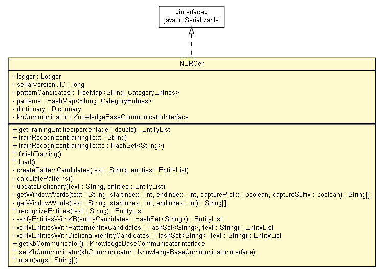

tud.iir.tagging
Class NERCer

java.lang.Object
 tud.iir.tagging.NERCer
tud.iir.tagging.NERCer
- All Implemented Interfaces:
- java.io.Serializable
public class NERCer
- extends java.lang.Object
- implements java.io.Serializable
- See Also:
- Serialized Form
|
Method Summary |
private void |
calculatePatterns()
|
private void |
createPatternCandidates(java.lang.String text,
EntityList entities)
|
void |
finishTraining()
|
KnowledgeBaseCommunicatorInterface |
getKbCommunicator()
|
EntityList |
getTrainingEntities(double percentage)
|
private java.lang.String[] |
getWindowWords(java.lang.String text,
int startIndex,
int endIndex)
|
private java.lang.String[] |
getWindowWords(java.lang.String text,
int startIndex,
int endIndex,
boolean capturePrefix,
boolean captureSuffix)
|
void |
load()
|
static void |
main(java.lang.String[] args)
|
EntityList |
recognizeEntities(java.lang.String text)
|
void |
setKbCommunicator(KnowledgeBaseCommunicatorInterface kbCommunicator)
|
void |
trainRecognizer(java.util.HashSet<java.lang.String> trainingTexts)
|
void |
trainRecognizer(java.lang.String trainingText)
|
private void |
updateDictionary(java.lang.String text,
EntityList entities)
Update the dictionary. |
private EntityList |
verifyEntitiesWithDictionary(java.util.HashSet<java.lang.String> entityCandidates,
java.lang.String text)
|
private EntityList |
verifyEntitiesWithKB(java.util.HashSet<java.lang.String> entityCandidates)
|
private EntityList |
verifyEntitiesWithPattern(java.util.HashSet<java.lang.String> entityCandidates,
java.lang.String text)
|
| Methods inherited from class java.lang.Object |
clone, equals, finalize, getClass, hashCode, notify, notifyAll, toString, wait, wait, wait |
logger
private static final org.apache.log4j.Logger logger
serialVersionUID
private static final long serialVersionUID
- See Also:
- Constant Field Values
patternCandidates
private java.util.TreeMap<java.lang.String,CategoryEntries> patternCandidates
patterns
private java.util.HashMap<java.lang.String,CategoryEntries> patterns
dictionary
private Dictionary dictionary
kbCommunicator
private transient KnowledgeBaseCommunicatorInterface kbCommunicator
NERCer
public NERCer()
getTrainingEntities
public EntityList getTrainingEntities(double percentage)
trainRecognizer
public void trainRecognizer(java.lang.String trainingText)
trainRecognizer
public void trainRecognizer(java.util.HashSet<java.lang.String> trainingTexts)
finishTraining
public void finishTraining()
load
public void load()
createPatternCandidates
private void createPatternCandidates(java.lang.String text,
EntityList entities)
calculatePatterns
private void calculatePatterns()
updateDictionary
private void updateDictionary(java.lang.String text,
EntityList entities)
- Update the dictionary.
- Parameters:
text - The text that is used to search the given entities.entities - The entities that appear in the given text.
getWindowWords
private java.lang.String[] getWindowWords(java.lang.String text,
int startIndex,
int endIndex,
boolean capturePrefix,
boolean captureSuffix)
getWindowWords
private java.lang.String[] getWindowWords(java.lang.String text,
int startIndex,
int endIndex)
recognizeEntities
public EntityList recognizeEntities(java.lang.String text)
verifyEntitiesWithKB
private EntityList verifyEntitiesWithKB(java.util.HashSet<java.lang.String> entityCandidates)
verifyEntitiesWithPattern
private EntityList verifyEntitiesWithPattern(java.util.HashSet<java.lang.String> entityCandidates,
java.lang.String text)
verifyEntitiesWithDictionary
private EntityList verifyEntitiesWithDictionary(java.util.HashSet<java.lang.String> entityCandidates,
java.lang.String text)
getKbCommunicator
public KnowledgeBaseCommunicatorInterface getKbCommunicator()
setKbCommunicator
public void setKbCommunicator(KnowledgeBaseCommunicatorInterface kbCommunicator)
main
public static void main(java.lang.String[] args)
- Parameters:
args -